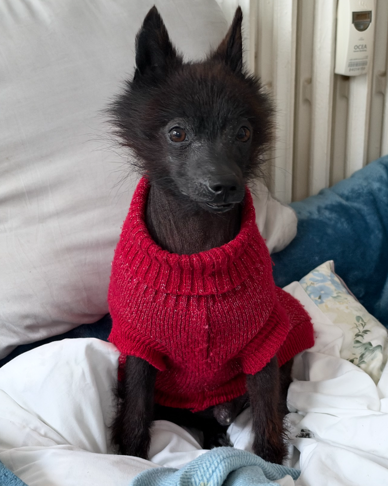
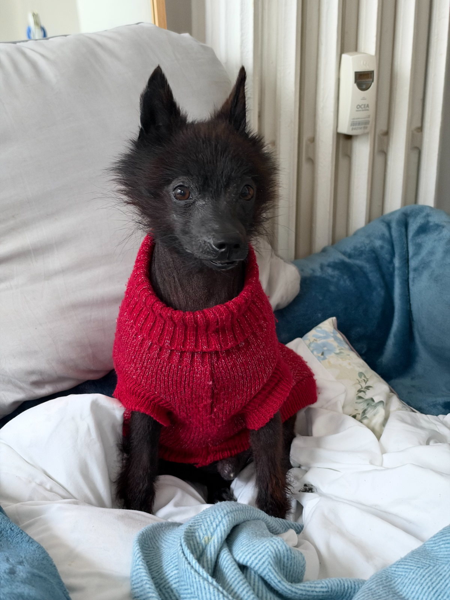

Togo · iOS 28 · UK
Liquid Glass поверх фото. Час справжній.
Стан дня
Усі екрани
{{ g.title }}

Togo
Щоденник собаки для всієї родини.
{{ onb.n }} з 3
{{ onb.title }}
{{ onb.weight }}кг
Для порції та зборів у дорогу.
{{ onb.name }} їсть {{ onb.meals }}, ходить {{ onb.place }}, ліки {{ onb.meds }}.
Натисни підкреслене, щоб змінити.{{ r.icon }}{{ r.t }}{{ r.s }}
{{ dogName }}{{ headerSub }}
{{ dayTitle }}
{{ b.icon }}{{ b.t }}{{ b.s }}

{{ P.icon }}{{ P.lab }}Далі · {{ P.when }}{{ P.next }}
merge{{ merge.title }}{{ merge.sub }}
Попереду
{{ feedTitle }}
pets Тут будуть сліди дня{{ emptyText }}
home{{ e.gap }}
{{ e.time }}
{{ e.icon }}
{{ e.t }}{{ mk.icon }}{{ mk.t }}{{ mk.time }}
{{ P.icon }}{{ P.short }}далі{{ P.next }}
historyМинулий день · запис через «+»

{{ walk.sub }}{{ walk.title }}
Додомуkeyboard_double_arrow_righthome
{{ dogName }}шиперке · 3 роки · 8,4 кг · є чипphoto_camera
{{ g.title }}
{{ hist.chartTitle }}30 днів
Як часто гуляєте{{ hist.rhythm }}виходів на день · 2 тижніЦе не норма, а дзеркало: порівнюй із ним місяць тому — тоді було {{ hist.rhythmPrev }}.
Після довгих днів удомаПісля проміжків довших за 7 год: рідкий стілець — 2 рази, блювання — 1. Покажи лікарю.
{{ hist.monthTitle }}
timeline{{ hist.episode.t }}{{ hist.episode.s }}
{{ hist.dayTitle }}
pets Цього дня записів немає.
{{ e.gap }}
{{ e.time }}{{ e.icon }}{{ e.t }}{{ e.v }} {{ e.rest }}
medicationЛевотироксин 0,1 мг{{ doseSchedule }}
Запас · левотироксин
{{ stock.days }}{{ stock.unit }}
{{ stock.until }}
Т4 · протокол контролюнорма 1,5–4,0
{{ p.v }}
{{ p.d }}{{ p.dose }}
Форма точки — час забору: ● години від дози відомі · ✕ не записані · ■ лікування того дня не було. {{ t4.verdict }}
{{ pr.k }}{{ pr.v }}
{{ g.title }}
Чергує сьогодні{{ duty.name }}{{ duty.s }}
Учасники · {{ family.count }}
П'ять ролей, вісім прав{{ r }} Гість не змінює лікування. Ситер не бачить медицину.
descriptionІнструкція для Аніп'ять рядків без діагнозу
Безкоштовно — двоє. Третя людина — Pro.
{{ b.t }}{{ b.s }}
{{ b.cap }}{{ b.n }}{{ b.unit }}{{ b.s }}
{{ b.icon }}{{ b.t }}{{ b.s }}
{{ b.title }}
directions_walkВід прогулянки{{ b.since }}
medicationДоза{{ b.dose }}{{ b.doseS }}
Стіч · далі{{ b.next }}directions_walkГуляти
Блокування і Dynamic Island
Прогулянка · СтічВікторія вивела Стіча12:34
water_dropПописавgrassСтілець
directions_walkНа вулиці12:34
Siri
«Togo, Стіч пописав»Записав: пописав о {{ b.now }}.
{{ b.title }}
{{ r.icon }}{{ r.t }}{{ r.s }}{{ r.val }}chevron_right
{{ b.title }}
{{ b.title }}{{ c.t }} {{ b.note }}
{{ b.code }}{{ b.s }}
{{ clock }}{{ netIcon }}wifibattery_full
{{ toast.text }}
{{ alert.title }}{{ alert.text }}
{{ sheet.title }}{{ sheet.sub }}
{{ form.val }}{{ form.unit }}
{{ form.note }}{{ form.noteSub }}
callКров — подзвонити лікарю · Вет+ до 20:00
Схоже, що{{ verdict.t }}{{ verdict.why }}
medication{{ verdictDose.t }}{{ verdictDose.s }}
{{ sum.dur }}Прогулянка{{ sum.range }}
{{ edit.time }}
{{ edit.who }}{{ edit.origin }}
{{ r.k }}{{ r.v }}
{{ p.icon }}{{ p.t }}{{ p.s }}